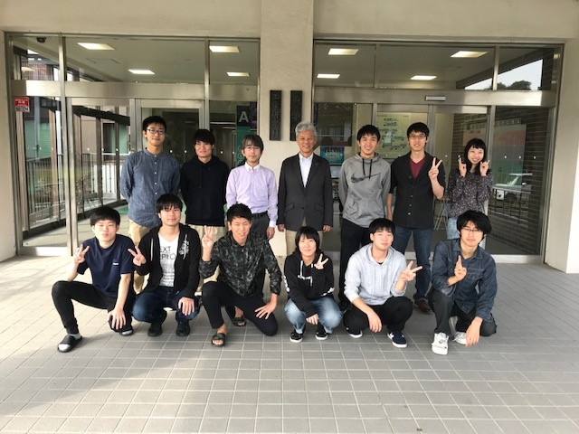

教員
教授/ 谷口 朋代 (Taniguchi Tomoyo)
助教/ 向坊 恭介 (Mukaibo Kyosuke)
M2
宮内 芳維 (Miyauchi Yoshiyuki)
M1
太田原 基 (Otahara Motoi)
海江田 巧 (Kaieda Takumi)
信藤 拓海 (Shindo Takumi)
平井 大也 (Hirai Daiya)
蓬莱 孝彦 (Horai Takahiko)
B4
金子 真大 (Kaneko Masahiro)
下垣 栞里 (Shimogaki Shiori)
花坂 和樹 (Hanasaka Kazuki)
花田 貴也 (Hanada Takaya)
廣岩 広路 (Hiroiwa Koji)
矢野 健一郎 (Yano Kenichiro)
留学生
黄巳菁 (Ko Shisei)